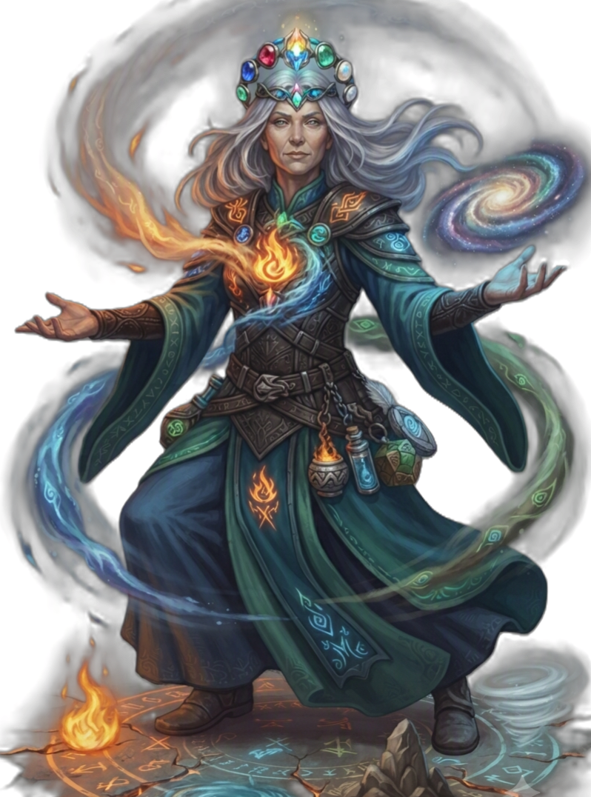

| Rolle | Vollzauberer · Elementarer Schadensverursacher · Flächeneffekt-Spezialist |
| Zauberertyp | Vollzauberer Zauberslots bis Rang 9 |
| Primärer Schadensattribut | Intelligenz (INT) |
| Sekundärer Schadensattribut | — |
| Zauberattribut | Intelligenz (INT) |
| TP (L1) | 6 |
| TP pro Level | 4 |
| Rüstung | Keine |
| Waffen | Magierwaffen — Dolche, Stäbe, Zauberstäbe, Bücher |
| Rettungswürfe | Intelligenz (INT), Konstitution (KON) |
| Attributsteigerung (Level) | 4, 8, 12, 16 |
| Fertigkeiten (2 zur Auswahl) | Arkana, Naturkunde, Nachforschung, Wissen, Logik |
Der ELEMENTARIST ist der Spezialist für elementare Magie — Feuer, Eis, Blitz und Erde sind seine Werkzeuge. Wo der MAGIER das breiteste Spektrum hat, hat der ELEMENTARIST die tiefste Elementar-Expertise. Er wählt ein Element (FLAMME, FROST oder STURM) als seinen Fokus und bekommt zunehmend bessere Boni darauf: +Profan-Bonus auf Zauber-Angriffswürfe (L1), +1W6 Bonus-Schaden pro Zug (L5), Resistenz-Ignorierung (L10), +2 Schaden (L14). Er kann aber auch alle anderen Elemente nutzen — Flammenwelle, Eisnebel, Blitzschlag, Erdbeben, Wasserpeitsche. Mit Elementarform (L18) verwandelt er sich selbst in einen Elementar. Seine Abschlussfähigkeit (L20) gibt ihm einen Basiszauber des gewählten Elements beliebig oft. Er ist der Meister der Elemente — auf Distanz und im Flächeneffekt gibt es niemand der mehr Fläche deckt.
| Level | Fähigkeit | Beschreibung |
|---|---|---|
| L1 | Elementarfokus | Wähle ein Element (FLAMME, FROST, STURM). +Profan-Bonus auf Zauber-Angriffswürfe mit diesem Element (skaliert: +2/+4/+6/+8/+10 bei L1/L5/L9/L13/L17). |
| L2 | Elementarbindung | Element wählen (wird als gewähltes Element im System gespeichert). |
| L3 | Elementare Affinität | Passiv: +2 Intelligenz. |
| L5 | Elementarer Ausbruch | Passiv: 1/Zug +1W6 Bonus-Schaden mit gewähltem Element. |
| L6 | Elementare Resistenz | Passiv: Resistenz gegen das gewählte Element. |
| L10 | Elementarer Schild | Passiv: Verbündete in 10ft erhalten Resistenz gegen FLAMME, FROST, STURM. |
| L10 | Elementare Durchschlagskraft | Passiv: Zauber des gewählten Elements ignorieren Resistenz. |
| L14 | Meisterelement | Passiv: +2 Schaden mit gewähltem Element. |
| L18 | Elementarform | 1/Lange Rast: Verwandle dich in einen Elementar für 1 Minute (Feuer, Wasser, Luft oder Erde). |
| L20 | Erzmagier der Elemente | Passiv: Basiszauber des gewählten Elements beliebig oft einsetzbar. |
Alle Zauber nutzen Zauberslots (Vollzauberer-Progression, Rang 1–9). Zauberattribut ist Intelligenz (INT). Upcast-Skalierung pro zusätzlichem Zauberslot bei Froststrahl (+1W8), Steinschlag (+1W8), Flammenwelle (+1W6), Wasserpeitsche (+1W6), Blitzschlag (+1W8), Erdbeben (+1W6), Flammensturm (+1W6), Kettenblitz (+1W8 +1 Ziel).
| Fähigkeit | Aktion | Nutzung | Level | Beschreibung |
|---|---|---|---|---|
| Froststrahl | Aktion | Basiszauber — unbegrenzt | L1 | FROST 1W8 Frost, GES-Rettungswurf (halber Schaden bei Erfolg), Reichweite 12. Upcast: +1W8 pro Slot. |
| Steinschlag | Aktion | Basiszauber — unbegrenzt | L1 | NATUR 1W8 Wucht, Angriffswurf, Reichweite 12. Upcast: +1W8 pro Slot. |
| Fähigkeit | Aktion | Nutzung | Level | Beschreibung |
|---|---|---|---|---|
| Eisnebel | Aktion | Zauberslot 1 | L1 | FROST Flächeneffekt 10ft: 2W6 Frost + GES-Rettungswurf oder festgehalten. |
| Flammenwelle | Aktion | Zauberslot 1 | L1 | FLAMME Kegel 15ft: 3W6 Feuer + GES-Rettungswurf (halber Schaden bei Erfolg). |
| Wasserpeitsche | Aktion | Zauberslot 1 | L1 | NATUR 2W6 + STR-Rettungswurf oder gepackt. |
| Blitzschlag | Aktion | Zauberslot 2 | L3 | STURM 4W8 Blitz + GES-Rettungswurf (halber Schaden bei Erfolg), Reichweite 30. |
| Steinhaut | Aktion | Zauberslot 2 | L3 | NATUR +3 RK für 1 Minute. |
| Erdbeben | Aktion | Zauberslot 3 | L5 | NATUR Flächeneffekt 20ft: 5W6 Wucht + STR-Rettungswurf oder niedergeschlagen. |
| Flammensturm | Aktion | Zauberslot 4 | L7 | FLAMME Flächeneffekt 20ft: 7W6 Feuer + GES-Rettungswurf (halber Schaden bei Erfolg). |
| Kettenblitz | Aktion | Zauberslot 5 | L9 | STURM 8W8 Blitz + GES-Rettungswurf (halber Schaden bei Erfolg) + Kette auf 3 weitere Gegner. |
| Fähigkeit | Aktion | Nutzung | Level | Beschreibung |
|---|---|---|---|---|
| Elementarform | Aktion | 1/Lange Rast | L18 | Verwandle dich in einen Elementar für 1 Minute (Feuer, Wasser, Luft oder Erde). |
| Ressource | Mechanik | Verfügbarkeit |
|---|---|---|
| Zauberslots | Vollzauberer-Progression (Rang 1–9). Zauberattribut: INT. | Alle Zauber, pro Zauberslot |
| Gewähltes Element | FLAMME, FROST oder STURM — bestimmt Skalierungs-Boni (Angriff, Schaden, Resistenz) | Ab L1, gewählt bei Charaktererstellung |
| Elementarer Ausbruch | +1W6 Bonus-Schaden mit gewähltem Element (hardcoded) | 1/Zug, ab L5 |
| Elementarform | Verwandlung in Elementar | 1/Lange Rast, ab L18 |